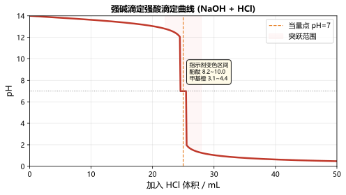

掌握实验室用加热高锰酸钾（KMnO₄）制取氧气的方法，学会排水集气法和验满操作。
高锰酸钾受热分解：2KMnO₄ → K₂MnO₄ + MnO₂ + O₂↑（加热）
铁架台（带铁夹）、酒精灯、大试管、单孔橡皮塞、导管、集气瓶、水槽、玻璃片、高锰酸钾、棉花。
试管中紫色固体逐渐变为黑色，有气体产生。带火星的木条伸入集气瓶中复燃，证明是氧气。
排水法：集气瓶口有大气泡向外冒出说明已集满。向上排空气法：将带火星木条放在集气瓶口，木条复燃说明已满。
掌握实验室用大理石（CaCO₃）和稀盐酸反应制取二氧化碳的方法。
CaCO₃ + 2HCl → CaCl₂ + H₂O + CO₂↑
锥形瓶（或大试管）、长颈漏斗、双孔橡皮塞、导管、集气瓶、玻璃片、大理石（石灰石）、稀盐酸。
大理石表面有大量气泡产生，固体逐渐溶解。澄清石灰水倒入集气瓶中变浑浊（CO₂ 的检验方法）。
将气体通入澄清石灰水，石灰水变浑浊：CO₂ + Ca(OH)₂ → CaCO₃↓ + H₂O
通过实验验证酸和碱发生中和反应，理解中和反应的实质是 H⁺ + OH⁻ → H₂O。
NaOH + HCl → NaCl + H₂O（放热反应）。中和反应实质：H⁺ + OH⁻ → H₂O

烧杯、量筒、胶头滴管、玻璃棒、温度计、pH试纸、NaOH稀溶液、稀盐酸、酚酞试液。
溶液由红色逐渐变为无色（酚酞在碱性中显红色，中性时无色）。反应过程中温度升高（放热）。
| 指示剂 | 酸性 | 中性 | 碱性 |
|---|---|---|---|
| 石蕊 | 变红 | 紫色 | 变蓝 |
| 酚酞 | 无色 | 无色 | 变红 |
| 甲基橙 | 变红 | 橙色 | 变黄 |
通过金属与酸、金属与盐溶液的反应，探究常见金属的活动性强弱。
活动性强的金属能将活动性弱的金属从其盐溶液中置换出来。Fe + CuSO₄ → FeSO₄ + Cu
试管、试管架、镊子、稀盐酸（或稀硫酸）、CuSO₄溶液、FeSO₄溶液、AgNO₃溶液、锌片、铁片、铜片、银片。
K Ca Na Mg Al | Zn Fe Sn Pb (H) | Cu Hg Ag Pt Au（由强到弱）
| 金属 | 与盐酸反应 | 与盐溶液反应 | 活动性 |
|---|---|---|---|
| Zn | 剧烈反应，产生大量气泡 | — | ★★★ |
| Fe | 缓慢反应，有少量气泡 | 能从CuSO₄中置换Cu | ★★ |
| Cu | 不反应 | 能从AgNO₃中置换Ag | ★ |
| Ag | 不反应 | — | ☆ |
通过电解水实验验证水的组成，理解水是由氢元素和氧元素组成的。
2H₂O → 2H₂↑ + O₂↑（通电）。水在通电条件下分解生成氢气和氧气，正极产生氧气，负极产生氢气，体积比 H₂:O₂ = 2:1。
水电解器、直流电源、导线、试管、木条、火柴、蒸馏水（加稀硫酸或NaOH增强导电性）。
| 电极 | 气体 | 体积 | 检验方法 | 现象 |
|---|---|---|---|---|
| 正极（阳极） | 氧气 (O₂) | 1份 | 带火星木条 | 木条复燃 |
| 负极（阴极） | 氢气 (H₂) | 2份 | 点燃 | 淡蓝色火焰 |
水在通电条件下分解生成氢气和氧气，体积比 2:1，证明水是由氢、氧两种元素组成的化合物。
掌握粗盐提纯的基本操作——溶解、过滤、蒸发，学会使用玻璃棒在不同操作中的作用。
粗盐中含有泥沙等不溶性杂质，利用过滤法除去不溶性杂质，再通过蒸发结晶得到较纯净的食盐。
烧杯、玻璃棒、漏斗、铁架台（带铁圈）、滤纸、蒸发皿、酒精灯、坩埚钳、粗盐、水。
| 操作 | 玻璃棒作用 |
|---|---|
| 溶解 | 搅拌，加速溶解 |
| 过滤 | 引流，防止液体溅出 |
| 蒸发 | 搅拌，使受热均匀，防止飞溅 |
通过溶解—过滤—蒸发三个步骤，成功除去粗盐中的泥沙杂质，得到较纯净的食盐晶体。